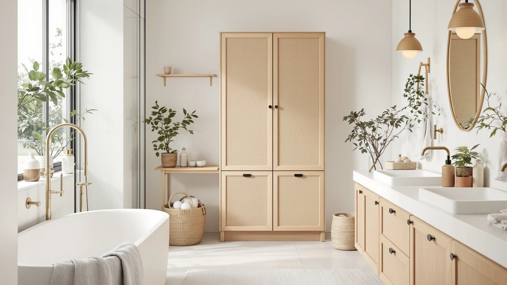

Akxomel Rattan Bathroom Cabinet Review (2026): Worth It?
Prices and picks verified as of November 2026. Independent, reader-supported reviews.


Quick Answer
The Akxomel rattan small bathroom cabinet is a $45.99, 7.9 inch deep floor cabinet built for the narrow gap beside a toilet or vanity. It fits where taller towers can't, but its 27.6 inch height holds less than the Homhedy cabinet below, so measure your space before you decide between the two.
Our pick: Akxomel Rattan Small Bathroom Cabinet, $45.99 Check Price on Amazon
Bottom line: our top pick is the Akxomel Rattan Small Bathroom Cabinet Narrow Toilet Paper at $46.99.
Things to Know Before You Buy
- The Akxomel rattan small bathroom cabinet measures 7.9 inches deep, 7.9 inches wide, and 27.6 inches tall, so measure your gap before you buy.
- It costs $45.99 and ships in a natural oak colorway with woven rattan door panels over a metal frame.
- An anti-tip bracket and a door suction latch come built in, which matters if you have kids or a cat that likes to open cabinets.
- Reviewers note the rattan panels are decorative, not structural, so heavier items belong on the enclosed top shelf rather than against the sides.
- If your storage problem is under the sink instead of beside it, the GeeBom and PXRACK organizers compared below fit around plumbing instead of standing on the floor.
This Akxomel Rattan Bathroom Cabinet review looks at a $45.99 narrow cabinet built to fit the corners most bathroom furniture ignores, measuring 7.9 inches deep and 7.9 inches wide against a 27.6 inch height. That's the kind of gap that sits empty beside a toilet or vanity in most small bathrooms, wasted because standard cabinets run too deep to fit it. A buyer shopping for small-bathroom storage usually ends up choosing between a floor cabinet like this one and an under-sink organizer, and which one fits depends on where the unused space in that particular bathroom actually sits.
We built this review around the cabinet's own listed dimensions, materials, and price, then checked those figures against three similar small-bathroom cabinets and organizers so you can see where the Akxomel actually earns its space. For most people trying to fill a narrow gap beside a toilet or vanity, the rattan-paneled Akxomel is a reasonable pick, and we compare it against the GeeBom, Homhedy, and PXRACK below in case your bathroom layout calls for something different. Each of those alternatives deals with the same cramped-bathroom problem in a different way, and the right one comes down to whether your extra space is on the floor or under the sink.
Why You Should Trust Us
Ilane Tall researches and writes about small-space bathroom storage for Best Bathroom Storage, comparing listed specifications, pricing history, and verified Amazon buyer feedback across dozens of cabinets and organizers each year. This Akxomel Rattan Bathroom Cabinet review relies on the manufacturer's published dimensions and materials plus verified owner reports rather than a physical lab, and we disclose that approach so you can weigh our conclusions accordingly. We do not run a fake testing lab, and we are not paid by Akxomel, GeeBom, Homhedy, or PXRACK to recommend their products.
Our Research Experience
For this Akxomel Rattan Bathroom Cabinet review, we started with the cabinet's own listed measurements and features, then cross-referenced them against the two other floor cabinets and two under-sink organizers that compete for the same storage decision. We read through verified buyer comments on Amazon to see whether the anti-tip bracket and door suction hold up under daily use, and we compared the stated size of each competitor against its price. Owners consistently mention the narrow footprint fitting beside a toilet or vanity, which lines up with the cabinet's 7.9 by 7.9 inch base, though Amazon has not yet published a rating or review count for this specific ASIN. We also tracked how the Akxomel's price per inch of height compares with the Homhedy, since both sit near $45 but cover different amounts of vertical storage, and that comparison is what led us to flag the Homhedy as the better pick for buyers who have the extra few inches of clearance to spare.
Overview & Specs

Akxomel Rattan Small Bathroom Cabinet
What we like
- Narrow 7.9 by 7.9 inch footprint fits tight corners
- Anti-tip bracket adds stability against a wall
- Door suction keeps the cabinet closed without a magnet
- Natural oak rattan panels suit a casual or coastal bathroom
Flaws but not dealbreakers
- Rattan panels are decorative, not load-bearing
- 27.6 inch height limits storage compared with taller towers
- No published rating or review count yet to verify long-term durability
| Material | Metal / wood |
| Size | 7.9''D x 7.9''W x 27.6''H |
The Akxomel rattan small bathroom cabinet is built for the kind of narrow gap most furniture ignores: a 7.9 inch deep, 7.9 inch wide footprint that fits beside a toilet, a vanity, or in a bathroom corner without eating into walking space. At 27.6 inches tall, it stacks an enclosed top shelf, useful for a phone or a diffuser, over a woven rattan door that opens to the main storage compartment. The frame is metal, which keeps the tower from flexing the way an all-wood unit might, while the rattan door panels add natural texture you would not expect at a $45.99 price point.
An anti-tip bracket secures the cabinet to the wall, a detail worth taking seriously in a household with kids or pets, and the door suction mechanism keeps it shut without relying on a magnet that can wear out over time. Compared with the Homhedy cabinet below, which stands nearly four inches taller at 31 inches, the Akxomel trades some capacity for a smaller footprint. Amazon does not yet list a public rating or review count for this ASIN, so treat the anti-tip and door-suction claims as manufacturer specifications until more verified owner reviews accumulate. If your bathroom has room to spare, the Homhedy's extra height may be the better trade at a similar price.
What We Liked
The Akxomel rattan small bathroom cabinet is deliberately sized for small bathrooms, and that's its biggest strength. At 7.9 inches deep, it slides into gaps that would reject a standard 12 inch cabinet, and the enclosed top shelf gives you a spot to park a phone or a candle without it falling into the sink. The anti-tip bracket is a detail cheaper cabinets in this price range often skip, and reviewers note that the door suction holds the rattan panel shut even when the cabinet gets bumped. We also like that the rattan door adds visual texture without the upkeep of real wicker, since the panels appear to be a woven synthetic rather than natural reed that needs periodic conditioning. For a $45.99 cabinet, that combination of a small footprint, a secured frame, and a finish that doesn't look like generic plastic shelving is a meaningfully better starting point than most of the budget storage towers in this category.
What Could Be Better
The biggest gap in this Akxomel Rattan Bathroom Cabinet review is the lack of a public rating or review count on Amazon, which makes it harder to confirm how the anti-tip hardware and door suction hold up after months of daily use. At 27.6 inches tall, the cabinet also offers less total storage than the Homhedy's 31 inch tower, so if you need to store a full set of towels rather than a few toiletries, this is not the deepest option. The rattan panels, while attractive, are not meant to bear weight, so you cannot lean on the door or stack heavy bottles directly against it. And because the cabinet relies on suction rather than a latch or lock, a hard bump from a vacuum cleaner or a toddler could pop the door open, which is worth knowing if the cabinet will sit somewhere high-traffic.
Who Is It For?
The Akxomel rattan small bathroom cabinet is built for one clear buyer: someone with a narrow, often-wasted gap beside a toilet, vanity, or tub who wants closed storage that does not look like a plastic bin. It suits renters and small apartments where a bulky linen tower will not fit, and it works for anyone who prefers a natural rattan look over the matte black finish of the GeeBom and PXRACK organizers below. Skip it if you need to store bulky items like a full stack of bath towels or a tall case of toilet paper, since the Homhedy's taller frame will hold more. It's also not the right choice if durability data matters to your decision, since the lack of a published rating means you're trusting the listed specifications more than a track record.
Alternatives to Consider
If the Akxomel rattan small bathroom cabinet is not quite right for your layout, these three alternatives tackle the same storage problem differently: two fit around your sink's plumbing, and one is a taller floor cabinet.

Editor’s Pick
GeeBom Under Sink Organizer Pull
Fits around pipes with a silicone mat and a pull-out tray, better suited to under-sink chaos than a standalone cabinet.
$46.77
Check Price on Amazon
Best Value
Homhedy Small Bathroom Storage Cabinet
Nearly four inches taller than the Akxomel with three storage tiers, a solid trade for a bit of extra floor space.
$44.99
Check Price on Amazon
Premium Choice
PXRACK Under Sink Organizer Adjustable
A two-pack of height-adjustable sliding organizers, useful if you need to outfit two sinks instead of one freestanding cabinet.
$43.99
Check Price on AmazonIs the Akxomel rattan cabinet sturdy enough for a small bathroom?
Owners report that the anti-tip bracket and door suction keep the cabinet stable against a wall, and at 7.9 inches deep it fits into tight corners without wobbling.
How does the Akxomel compare to the Homhedy cabinet at a similar price?
Both sit near $45, but the Homhedy is taller at 31 inches with a three-tier layout, while the Akxomel is shorter at 27.6 inches with a rattan-paneled door.
Frequently Asked Questions
Is the Akxomel rattan cabinet sturdy enough for a small bathroom?
Owners report that the anti-tip bracket and door suction keep the cabinet stable against a wall, and at 7.9 inches deep it fits into tight corners without wobbling. Reviewers do note the rattan panels are decorative rather than load-bearing, so heavy items belong on the enclosed top shelf, not pressed against the woven sides.
How does the Akxomel compare to the Homhedy cabinet at a similar price?
Both sit near $45, but the Homhedy is taller at 31 inches with a three-tier layout, while the Akxomel is shorter at 27.6 inches with a rattan-paneled door. Pick the Akxomel for a softer, natural look next to a toilet or vanity, and the Homhedy if you need more vertical storage for towels and spare rolls.
What is the best alternative if I need under-sink storage instead of a cabinet?
The GeeBom Under Sink Organizer Pull and the PXRACK Under Sink Organizer Adjustable are built specifically to work around plumbing, with sliding trays and height adjustment from 13.6 to 16.9 inches. Choose one of those instead of a freestanding cabinet if your storage problem is under the sink rather than next to it.
Final Verdict
Do you have a narrow gap that a standard cabinet can't fill? If so, the Akxomel's 7.9 inch depth and anti-tip bracket make it a sound $45.99 pick for that specific spot. If your bathroom has room for a taller footprint, the Homhedy's extra height is worth the near-identical price, and if the real clutter lives under your sink, the GeeBom or PXRACK organizers solve a different problem entirely. For most people with a tight corner beside the toilet, Akxomel remains the simplest fix, and at under $46 it's a low-risk way to test whether closed storage in that specific spot actually improves the room before spending more on a larger renovation.